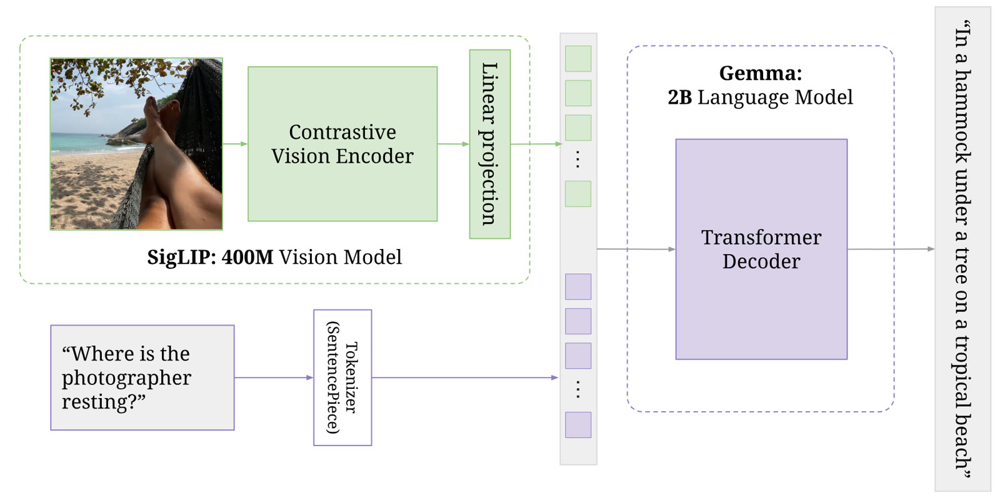
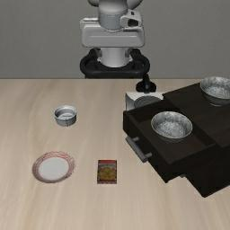
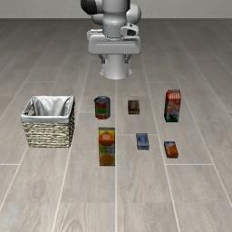
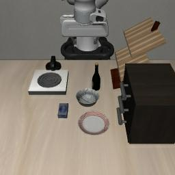
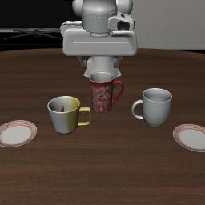

Here is one call from our own run of pi05_libero, the checkpoint this chapter is about. The robot was told pick up the black bowl between the plate and the ramekin and place it on the plate. At each call the sends the model two pictures, one from the camera facing the table and one from the camera on the wrist, along with that sentence. The model sends back ten , each one seven numbers. The robot carries out the first five, the cameras take new pictures, and the next call goes out with the same sentence. Our run took 21 calls, and the simulator counted the task done at step 104. Those two pictures and that one sentence are everything the model got, at every call from the first step to the last.
Figure 2.1 opens on call 8, 35 steps in, with the gripper coming down over a bowl. The third column, Δz, is the hand moving down, and it shrinks row by row as the hand slows. In row three the last number flips from −1 to +1, which closes the gripper. The call before had already planned to close it, but only in its tenth action, which the robot never ran because it asked again after five. Step through the calls to see the gripper close at step 37, open again at step 58 and close once more at step 69.
The parts
1of 2 networks · the vision-language model
is built from two networks. The first is a , , which Google trained on images and text from the web. PaliGemma has two pieces of its own. An called turns each picture into , and the 2B language model reads those together with the tokens of the text. Figure 2.2 is the drawing from PaliGemma's own paper, where it answers a question about a photo.

pi05_libero the answer comes out of a second network, as actions instead of words. Image: Beyer et al. 2024, PaliGemma, Figure 1, CC BY 4.0.2of 2 networks · the action expert
The second network is the . It's a smaller , about 300 million (311 million in openpi's code), with the same 18 layers as Gemma. It never takes in the pictures or the sentence itself. In every layer it reads what Gemma computed at that layer, and from that it turns random numbers into an , using as in chapter 1.
So the instruction can reach the actions by one route only, through what the action expert reads from Gemma. Figure 2.3 follows one call through both networks. Scroll slowly through its eight steps; the figure stays in view and changes with each one.
Inside one call
The call starts with the two pictures of call 8 from figure 2.1 and the instruction. openpi's client has already shrunk each picture to 224 by 224 pixels and turned it 180 degrees.
SigLIP cuts each picture into a grid of 16 by 16 , each 14 pixels on a side. Every patch becomes one token, so each picture turns into 256 tokens.
The model also has a slot for a third camera. openpi fills it with a black picture and tells the model to skip those 256 tokens.
Gemma's tokenizer, the program that cuts text into tokens, splits the sentence into 20 of them: a start marker, 18 pieces for the 17 words and a line break that marks where the instruction ends. Most words get one token each, but ramekin is rare enough to be cut in two.
The text has room for 200 tokens. The other 180 are padding, and the model is told to skip them too.
Now put everything in one row and count. The model reads 532 tokens, and 20 of them come from the sentence. Each small square in the figure is one token.
Gemma's 18 layers read the whole row together. In every layer, through , each token can look at all the others, so the word tokens can take in what the pictures show and the picture tokens can take in what the words ask for.
Gemma runs once per call and keeps what every layer computed.
The action expert has 18 layers too. Its own input is 10 action tokens, one for each future action, and at the start they hold random numbers. In every layer the expert's tokens look at Gemma's tokens in the layer beside them. Gemma never looks back at the expert.
The expert refines its guess ten times. Each pass reads Gemma's saved layers again and moves all 70 numbers a little closer to a motion that fits the pictures and the sentence. Keep scrolling, or drag the slider under the figure, to watch it happen.
The end point is the chunk the model really returned for call 8. The path to it is drawn as a straight line from noise, which is the path flow matching trains the model to follow. The real model worked out each step's direction from what Gemma read, and we didn't record the steps in between.
The robot runs the first five actions. The simulator then takes two new pictures, and the next call starts again at step 1 with the same sentence. The other five predictions are thrown away.
Inside the model each action actually has 32 numbers. LIBERO's arm needs 7, so openpi pads the rest with zeros in training and keeps only the first 7 of each answer.
Figure 2.3 · Inside one call. The token counts come from openpi's code and from running Gemma's tokenizer on the sentence. The pictures and the final chunk are call 8 of our run from figure 2.1, and the noise the chunk starts from is drawn by this page. Recording: our run of openpi's pi05_libero checkpoint, 2026-11-11.
Reading isn't the same as using
Gemma reads the sentence in every call. Whether the sentence changes what the robot does is a separate question. The actions come out of the action expert, and the expert sees the words only through Gemma's layers, mixed in with 512 picture tokens. Suppose that during training the pictures alone were enough to predict what the operator did next. Then the expert could learn to rely on the picture tokens and give the word tokens little weight. The model would still read the sentence, and the sentence would change nothing. Chapter 4 turns this into tests, and chapter 5 shows what other groups measured on this checkpoint.
From π0 to π0.5
came out in October 2024 with this design. π0.5 followed in April 2025. It kept the design and changed what the model was trained on and what it was trained to say. Figure 2.4 puts the π models in order and marks the ones whose weights are in , 's open-source release.
- π0
PaliGemma plus an action expert, trained with flow matching. Predicts 50 actions per call.
A way to write an action chunk as a few tokens. Used to train π0-FAST and, later, π0.5.
- openpi
The code goes public with π0 and π0-FAST weights.
- π0.5
Same design, trained on many kinds of robot plus web data. Says the next small step in words before acting.
our model - Knowledge insulation
Keeps the action expert's training signal out of the VLM.
- π0.5 in openpi
Weights for
pi05_baseandpi05_libero, and a PyTorch version of the code. Keeps improving from its own attempts and from people's corrections. Not in openpi.
Its abstract says it follows diverse instructions in places it hasn't seen. Not in openpi.
The two newest models in figure 2.4 aren't in openpi. π*0.6 learns from the robot's own attempts through , and π0.7 takes richer prompts, such as pictures of a subgoal. This chapter stays with π0.5, which changed two things compared with π0.
1of 2 changes · the training data
The first change is the training data. π0.5 learned from about 400 hours of mobile robots doing housework in about 100 homes, and from a lot more besides. There were arms fixed in place in other homes and many kinds of robot in the lab, including the public collection. There was web data too, such as image captions, questions and answers about pictures, and finding objects in pictures. The paper says 97.6% of the training examples in the first phase didn't come from the mobile robots at all.
2of 2 changes · a step in words
The second change is that π0.5 learned to say the next small step in words before acting. Given clean the bedroom, it first writes a subtask such as pick up pillow, then produces the actions for that subtask. In its first training phase, 280,000 steps long, it learned actions as FAST tokens. A second phase of 80,000 steps added the action expert and flow matching. Figure 2.6 compares the paper's model with ours.
pi05_libero goes from the instruction straight to actions. That last part is our reading of openpi's README.Knowledge insulation
A network learns from its mistakes. After each guess the error is sent backwards through it as a , and every parameter on the way moves a little so that the error shrinks. In π0 the action expert's gradients also flowed back through attention into Gemma and SigLIP. Physical Intelligence later found that this does harm. The action expert starts out with random weights, and its gradients wore away some of what the VLM had learned from the web. Training got slower, and the robot followed instructions less well.
Their fix is called . The action expert still reads Gemma in every layer, but its gradients stop before they reach the VLM. The VLM learns about actions from a second target instead, the same chunk written as FAST tokens, and it keeps training on web data at the same time. Switch between the three settings in figure 2.7.
pi05_base was madepi05_base among them.pi05_libero was madepi05_libero spent its 30,000 LIBERO training steps in the first setting, with every weight training.So pi05_base learned with its VLM protected, and the LIBERO fine-tune then trained the VLM directly on robot actions from 40 tasks. We don't know whether that wore away any of its language following. It's an open question, and chapter 5 collects what other groups have measured.
What openpi gives us
openpi is Physical Intelligence's open-source code together with trained model weights. It was written in , and a version arrived in September 2025, the same month as π0.5. Two of its π0.5 matter to us. pi05_base is the general π0.5 and the starting point for . pi05_libero is pi05_base fine-tuned on , and it's the checkpoint we run.
How much memory your needs depends on what you do with a checkpoint. Figure 2.8 puts the numbers from openpi's README on one scale. fine-tuning trains small added matrices instead of all the weights, which is why it fits in much less memory.
How pi05_libero was made
openpi's training config has an entry called pi05_libero, and it holds the whole recipe. It starts from pi05_base and trains for 30,000 steps, and each step looks at 256 examples from the physical-intelligence/libero dataset. That dataset has 1,693 of the 40 tasks in LIBERO's four main suites, so one model handles all four. Each demonstration's instruction is its task's sentence. Point at a highlighted setting in figure 2.9, or tap it, to see what it controls.
src/openpi/training/config.py · lines 743–763
TrainConfig( name="pi05_libero", model=pi0_config.Pi0Config(pi05=True, action_horizon=10, discrete_state_input=False), data=LeRobotLiberoDataConfig( repo_id="physical-intelligence/libero", base_config=DataConfig(prompt_from_task=True), extra_delta_transform=False, ), batch_size=256, lr_schedule=_optimizer.CosineDecaySchedule( warmup_steps=10_000, peak_lr=5e-5, decay_steps=1_000_000, decay_lr=5e-5, ), optimizer=_optimizer.AdamW(clip_gradient_norm=1.0), ema_decay=0.999, weight_loader=weight_loaders.CheckpointWeightLoader("gs://openpi-assets/checkpoints/pi05_base/params"), pytorch_weight_path="/path/to/your/pytorch_weight_path", num_train_steps=30_000,),
pi05_base
Spatial
Object
Goal
LIBERO-10pi05_libero config, and what each setting controls. The code is copied from openpi at commit 215abfb. The struck-out numbers are a real robot state, 4.4 seconds into the chapter 1 run (episode 379, frame 44), as the LIBERO dataset records it. openpi's evaluation script sends eight numbers like these with every call, and the model drops them. Pictures: our run of openpi's pi05_libero checkpoint, 2026-11-11; first frames and state: physical-intelligence/libero, CC BY 4.0.“A robot policy always knows where its own arm is.”
Many robot policies do get the robot's state, meaning its or where its hand is. pi05_libero doesn't. In LIBERO the state is eight numbers: where the hand is, how it's turned, and how far apart the two fingers are. openpi's evaluation script still sends them with every call, and the model's input code drops them, so the model has to judge where the arm is from the two pictures.
At the first step of an , then, the model knows two things, the pictures and the sentence. If it ignores the sentence, the pictures decide everything.
The scores everyone quotes
openpi's LIBERO README reports how often pi05_libero succeeds after those 30,000 steps. Figure 2.10 shows its numbers next to one independent re-training from pi05_base, the baseline in the BehaPi model card on Hugging Face.
pi05_base on another copy of the LIBERO data and tested on 2,000 episodes. The axis starts at 85, not 0. Hover a dot for its source.The re-training averages 90.85, six points under openpi's 96.85. Small differences in data and setup can move these numbers that much, so before testing anything new we need to see where our own setup lands.
What this means for our project
Three facts from this chapter come back in every later chapter.
pi05_liberogets two pictures and one sentence and nothing else, so when we change the sentence, the pictures are the only other thing it can go by.- The sentence is 20 of the 532 tokens it reads, and it reaches the actions only through what the action expert reads from Gemma.
- The LIBERO fine-tune trained the whole model, VLM included, without the insulation
pi05_basehad.
Chapter 3 looks at LIBERO itself, and at why a 98% score doesn't show that the robot reads.
Check yourself
What does
pi05_liberoreceive at each call, and what does it send back?Show answer
Two pictures of 224 by 224 pixels, one from the table camera and one from the wrist camera, and the instruction sentence. It sends back 10 actions of 7 numbers each, and the robot runs the first 5 before the next call.
Of the 532 tokens the model reads in figure 2.3, how many come from the sentence, and by what route can they change the actions?
Show answer
20: a start marker, 18 pieces for the 17 words (ramekin is cut in two) and a line break. They can change the actions only through attention, because the action expert reads what Gemma computed in each layer and never sees the sentence itself.
We want to fine-tune π0.5 with LoRA. Which checkpoint do we start from, which version of openpi do we use, and how much GPU memory do we need?
Show answer
pi05_base, the JAX version (the PyTorch port doesn't support LoRA), and a GPU with more than 22.5 GB.Why does
discrete_state_input=Falsemake a blank-instruction test cleaner? Say it in your own words.Show answer
With no robot state and no instruction, the two pictures are the model's only input, so whatever it does comes from the pictures alone.
pi05_basewas pre-trained with knowledge insulation. What happened to its VLM during the fine-tune that madepi05_libero, and why might that matter for our question?Show answer
openpi has no insulation for fine-tuning, so for all 30,000 steps the action expert's gradients flowed into the VLM and every weight trained. The knowledge-insulation work found that letting those gradients in weakens language following, so the fine-tune could have worn away some of the reading
pi05_basecould do. That's a possibility to test, not a finding.
In questions 6 to 11, pick the answer you think is right. The option opens and says whether it's right and why, and you can open the others afterwards to see what's wrong with them.
In figure 2.1, call 7 had already planned to close the gripper, in its tenth action. Yet the gripper closed at step 37, during call 8. Why didn't call 7's plan close it?
The robot carried out all ten actions, and the gripper took a few steps to respond.
No. The robot never carries out all ten. It runs the first five and then asks the model again, so call 7's tenth action never ran.
The robot runs only the first five actions of a chunk. Call 7's tenth action was thrown away, and call 8 planned the close again from new pictures.
Right. Each call's last five actions are dropped. Call 8 started at step 35 and put the close in its third action, which is step 37.
openpi blended the plans of calls 7 and 8 where they overlap, and the blend put the close later.
No. Nothing is blended. The robot runs the first five actions of the newest chunk, and the other five are thrown away.
The action expert produces the actions. How does the instruction reach it?
In every layer the expert reads what Gemma computed, and the words are in there, mixed with 512 picture tokens.
Right. Attention is the only route. Gemma reads the 20 word tokens together with the picture tokens, and the expert reads Gemma's layers, so the words reach the actions only as part of that mix.
The expert reads the sentence's 20 tokens as part of its own input.
No. The expert's own input is 10 action tokens, which start out as random numbers. It never takes in the sentence itself.
Gemma first writes the next small step in words, and the expert acts on that.
No. That's π0.5 in the paper. openpi supports only the flow-matching action head for π0.5, so
pi05_liberogoes from the instruction straight to actions. That last part is our reading of openpi's README (figure 2.6).
Gemma reads the sentence in every call. What does that tell us on its own?
The sentence changes what the robot does, since the model reads it.
No, and this is the wrong belief the chapter warns about. The reading happens in Gemma, and the actions come from the action expert. If the pictures were enough during training, the expert could learn to give the words little weight.
The robot ignores the sentence and goes by the pictures.
No, that goes too far the other way. Nothing in this chapter shows the robot ignoring the words. It shows only that it could, and chapter 4 turns that into tests.
Nothing yet about whether the sentence changes the actions. That has to be tested.
Right. Reading and using are separate questions. Gemma reads the sentence every time, and whether the sentence changes the robot's moves has to be measured. Chapter 4 sets up the tests, and chapter 5 shows what other groups found.
π0.5 kept π0's design. Which two things did it change?
A new network design, and the robot's state as an extra input.
No. π0.5 kept the design, PaliGemma plus an action expert. And our checkpoint,
pi05_libero, gets no robot state at all.What it was trained on, and saying the next small step in words before it acts.
Right. The paper says 97.6% of the first-phase training examples didn't come from the mobile robots π0.5 was built for. And given clean the bedroom, it first writes a step such as pick up pillow.
What it was trained on, and knowledge insulation in every fine-tune.
No. The training data is right, but insulation was used only in pre-training. openpi's fine-tune doesn't have it, which is how
pi05_liberowas made.
How was the VLM trained during the 30,000-step fine-tune that made
pi05_libero?With knowledge insulation, like
pi05_base, so the action expert's gradients stopped before the VLM.No. Insulation was used to pre-train
pi05_base. openpi doesn't implement it for fine-tuning, as Karl Pertsch of Physical Intelligence confirmed on GitHub.The action expert's gradients flowed into the VLM, and every weight trained.
Right. openpi's fine-tune has one loss, the action expert's flow matching, and its gradients go through the expert and the VLM alike. The knowledge-insulation work found this weakens language following, so whether it did here is still open.
The VLM was frozen, and only the action expert learned.
No. The
pi05_liberoconfig trains every weight, the VLM included. Nothing was frozen.
openpi's evaluation script sends eight numbers about the robot's hand and fingers with every call. What does
pi05_liberodo with them?The action expert takes them as an extra input, next to its action tokens.
No. That's how π0 takes the robot's state in openpi's code. π0.5 has no state input in the action expert.
They're written into the prompt as text, next to the instruction.
No, though that is the one way π0.5 can take the state. The config sets
discrete_state_input=False, which turns it off, so the prompt holds only the instruction.Its input code drops them, so it has to judge where the arm is from the two pictures.
Right. With the only way in turned off, the eight numbers arrive and are thrown away. At every call the model has the two pictures and the sentence, and nothing more.
Sources
- Black et al. (2024), π0: A Vision-Language-Action Flow Model for General Robot Control. arXiv 2410.24164
- Physical Intelligence (2025), π0.5: a Vision-Language-Action Model with Open-World Generalization. arXiv 2504.16054. The training data, the 97.6% figure, the subtask example and the two training phases are from Sections I and IV, read 2026-11-11.
- Driess et al. (2025), Knowledge Insulating Vision-Language-Action Models: Train Fast, Run Fast, Generalize Better. arXiv 2505.23705, and Physical Intelligence's post on it, pi.website/research/knowledge_insulation.
- Pertsch et al. (2025), FAST: Efficient Action Tokenization for Vision-Language-Action Models. arXiv 2501.09747
- Physical Intelligence (2025), π*0.6: a VLA That Learns From Experience. arXiv 2511.14759. Physical Intelligence (2026), π0.7: a Steerable Generalist Robotic Foundation Model with Emergent Capabilities. arXiv 2604.15483
- Beyer et al. (2024), PaliGemma: A versatile 3B VLM for transfer. arXiv 2407.07726. Figure 1 reused under CC BY 4.0; 224-pixel images give 256 image tokens (Figure 2's text).
- openpi at commit 215abfb (24 Aug 2026, the latest when checked on 2026-11-11): the README and
examples/libero/README.md;src/openpi/training/config.py(thepi05_liberoentry, lines 743–763);src/openpi/models/pi0.py,pi0_config.py,gemma.py,tokenizer.py;src/openpi/policies/libero_policy.py;examples/libero/main.py. github.com/Physical-Intelligence/openpi - Karl Pertsch's answers in openpi issue #649, 11 and 12 September 2025. github.com/Physical-Intelligence/openpi/issues/649
- Our run of openpi's
pi05_liberocheckpoint on 2026-11-11: LIBERO-Spatial task 0, first starting arrangement, 21 calls, success at step 104. The pictures are what the model received and the chunks are what the policy server returned, rounded to 4 decimals. Kept in the repo understage1/runs/recorded-call-spatial0/. - The sentence's 20 tokens: PaliGemma's tokenizer (
gs://big_vision/paligemma_tokenizer.model, the file openpi downloads), run on 2026-11-11. - physical-intelligence/libero, CC BY 4.0: the state of episode 379 at frame 44, and the first frames of episodes 0, 379, 851 and 1262, read on 2026-11-11. huggingface.co/datasets/physical-intelligence/libero
- BehaPi checkpoints, model card, read 2026-11-11. huggingface.co/xuewei-huang/BehaPi-ckpts
- Talks: Sergey Levine (ujAURT7YG2g) and Suraj Nair (wz1QzZY4Iaw). Clip start and end times come from RoboBoom's section summaries of each talk (roboboom.com), checked 2026-11-11.
- Diagram style after Physical Intelligence's blog post “Frontier Models for Every Robot” (pi.website, 2026).